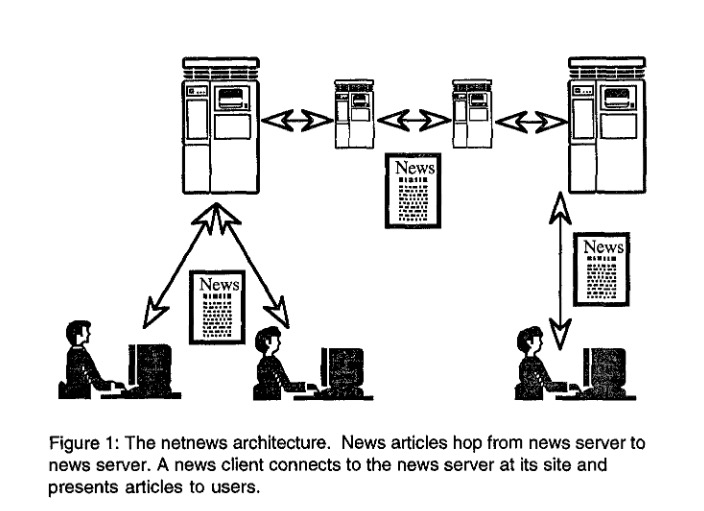

Paper Overview
The GroupLens: An Open Architecture for Collaborative Filtering of Netnews paper was one of the first papers to introduce collaborative filtering for recommendation applications in 1994. The paper focuses on not just the recommendation problem but also how those recommendations are integrated into the Usenet Netnews network, displayed to users, and implications for serving personalized news to users.
Introduction & Problem
Usenet’s netnews platform was an original social news aggregation network. Netnews created and shared bulletin boards where users could post news related to certain topics (see the figure below). This mimics many modern day social media platforms (most notably Reddit). While users could see and read news posted from other users, users noted that the “signal to noise” ratio was too low and had to rely on moderators and basic software (called news agents) to screen, remove, or boost certain news content.

While some of this was successful, most of these approaches were primitive and would not scale to many users and articles. GroupLens attempted to create a system (a news client) that would take into account user ratings to collaboratively filter our irrelevant news articles bases on the uses ratings of previous articles.
The stated goals of GroupLens was to
- Openess - other devs could change the rating system to address their own objectives.
- Ease of use - users could supply ratings to news articles was non-invasive
- Compatibility - the news client was accessible to all Netnews users
- Scalability - the rating mechanism scaled to many users and many articles
- Privacy - ensure users ratings privacy were preserved
Methods
The paper spend a good deal of time discussing the architecture of how article ratings will get passed from server to server to influence filtering of articles for new users (see Figure 2 for instance). The authors also spend time discussing the tradeoffs from building GroupLens on explicit ratings (e.g. user scores on each article from 1-5) versus implicit ratings (e.g. time spend reading each article). In modern applications, most recommendation systems focus on incorporating both explicit and implicit feedback but tend to focus on the later due to higher throughput and reliability of implicit feedback mechanisms (e.g. TikTok’s dwell time).
The authors ultimately decide to focus on explicit article ratings and treated the recommendation problem as a matrix completion problem.
Collaborative Filtering
For each user \(u\in\mathcal{U}\) and item \(v\in\mathcal{V}\) we assign the rating \(u\) assigns to \(v\) as \(R_{uv}\). Supposing \(\mid\mathcal{U}\mid = n\) and \(\mid\mathcal{V}\mid = m\) the ratings matrix \(\mathbf{R}\in\mathbb{R}^{n\times m}\) with
\[ \mathbf{R} = \begin{bmatrix} R_{11} & \dots & R_{1m}\\ R_{21} & \dots & R_{2m}\\ \vdots & \ddots & \vdots\\ R_{n1} & \dots & R_{nm} \end{bmatrix} \]
Now, several entries in \(\mathbf{R}\) will be missing as not every (user, item) pair will be rated.
The authors impute this missing scores based on the hueristic that “people who agreed in the past are likely to agree again.” To impute the missing rating \(R_{uv}\) they follow:
- Understand how similar user \(u\) is to all other users.
- Score the item \(v\) based on previous ratings of other users on \(v\) taking into account how similar the user is to \(u\).
This manifests in the scoring equation \[ \hat{R}_{uv} = \bar{R_u} + \frac{\sum_{s\neq u} \text{sim}(u, s)(R_{iv} - \bar{R}_i)}{\sum_{s\neq u} |\text{sim}(u, s)|} \]
Here, we first residualize all ratings relative to the user’s average rating. This removes any user-level bias or different interpretations of the rating scale. From here, we simply take a weighted sum of the ratings on item \(v\) for each user, weighted by the similarity between the user providing that rating \(i\) and user \(u\). The authors propose to model user-to-user similarity using simple correlation scores:
\[ \text{sim}(u, s) = \frac{\sum_{j=1}^m(R_{uj} - \bar{R}_{u})(R_{sj} - \bar{R}_{s})}{\sqrt{\sum_{j=1}^m(R_{uj} - \bar{R}_{u})^2}\sqrt{\sum_{j=1}^m(R_{sj} - \bar{R}_{s})^2}} \in [-1, 1] \]
In both of these equations, if \(R_{uv}\) is unobserved, then that term in the summand is removed. Therefore, if two users \((u, s)\) do not score any of the same items, their similarity is set to zero and user \(s\) ratings do not impact the rating estimates for user \(u\).
This approach is typically referred to user-collaborative filtering (since we measure user-to-user similarity) in modern applications and similar approaches for item-collaborative filtering
Collaborative Filtering - Extensions
The authors point out a number of limitations with this approach which are approached with newer methodologies but crucially they discuss:
- This method does not utilize implicit feedback
- This method does not utilize features of the users or items
- Similarity scoring across all users will not scale
Ramifications
The paper discuss how they might surface the confidence they have in the scores produced by this algorithm. The authors recommend the scores can be used to remove low (estimated) rated articles or can show the estimated scores as part of the UI. They point how each of these approaches may bias data collection but leave it to the News group moderators on how they want to integrate these ratings to their Newgroup bulletin.
Conclusion and Other Notes
The paper spend a significant portion of time on the application (Netnews) and not the individual recommendation mechanism. This allows for moderators and users of this news client to understand what the recommendation collaborative filter is doing and how it can reliably add value over time. The authors even spend time understanding the social impact of fractured news ecosystems driven by recommendation engines. This quote is from their “Global Villages” section.
Present newsgroups, like newspapers and local television shows before them, provide a shared history for their community of readers. With GroupLens, users may choose to read articles only from a small group with whom they share many common interests. Over time this could lead to a fracture of the global village into many small tribes, each forming a virtual community but nonetheless isolated from each other. Some kind of fracture is inevitable and even desirable, because no user can keep up with the overwhelming volume of news produced each day. The question is whether the subgroups will be closed or permeable.
I think this paper does a great job of understanding the core application and developing a recommendation strategy for it instead of applying a recommendation strategy to a use case without thought. Perhaps that’s why it’s still relavent 30 years after publication.